Links
Properties of Links
Now that we have a picture of how the layers of the Internet are built, let’s focus on how a packet is sent across a link.
There are three properties we can use to measure the performance of a link.
The bandwidth of a link tells us how many bits we can send on the link per unit time. Intuitively, this is the speed of the link. If you think of a link as a pipe carrying water, the bandwidth is the width of the pipe. A wider pipe lets us feed more water into the pipe per second. We usually measure bandwidth in bits per second (e.g. 5 Gbps = 5 billion bits per second).
The propagation delay of a link tells us how long it takes for a bit to travel along the link. In the pipe analogy, this is the length of the link. A shorter pipe means that water spends less time in the pipe before arriving at the other end. Propagation delay is measured in time (e.g. nanoseconds, milliseconds).
If we multiply the bandwidth and the propagation delay, we get the bandwidth-delay product (BDP). Intuitively, this is the capacity of the link, or the number of bits that exist on the link at any given instant. In the pipe analogy, if we fill up the pipe and freeze time, the capacity of the pipe is how much water is in the pipe in that instant.
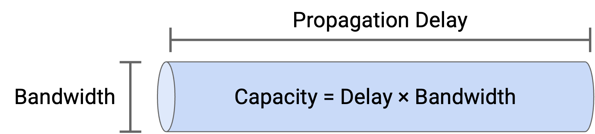
Note: You might sometimes see the term latency. In the context of a link, the latency is its propagation delay, though this word can also be used in other contexts (e.g. the latency from end host to end host, across multiple links). Latency by itself is not formally defined, and is context-dependent.
Timing Diagram
Suppose we have a link with bandwidth 1 Mbps = 1 million bits per second, and propagation delay of 1 ms = 0.001 seconds.
We want to send a 100 byte = 800 bit packet along this link. How long does it take to send this packet, from the time the first bit is sent, to the time the last bit is received?
To answer this question, we can draw a timing diagram. The left bar is the sender, and the right bar is the recipient. Time starts at 0 and increases as we move down the diagram.
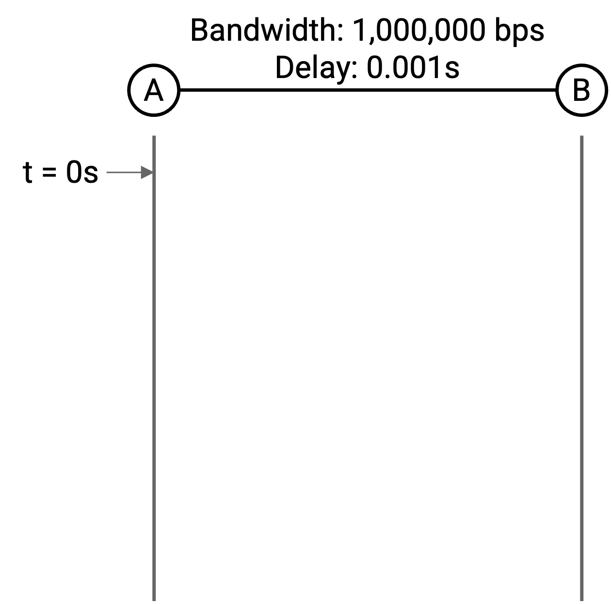
Let’s focus on the first bit. We can put 1,000,000 bits on the link per second (bandwidth), so it takes 1/1,000,000 = 0.000001 seconds to put a single bit on the link. At time 0.000001 seconds, the link has a single bit on it, at the sender end.
It then takes 0.001 seconds for this bit to travel across the link (propagation delay), so at time 0.000001 + 0.001 seconds, the very first bit arrives at the recipient.
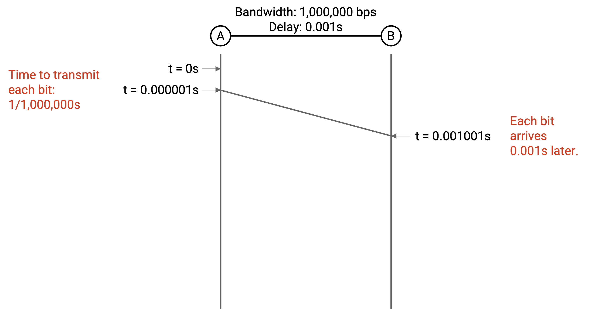
Now let’s think about the last bit. From before, it takes 0.000001 to put a bit on the link. We have 800 bits to send, so the last bit is placed on the link at time \(800 \cdot 0.000001 = 0.0008\) seconds.
It then takes 0.001 seconds for the last bit to travel across the link, so at time 0.0008 + 0.001 seconds, the very last bit arrives at the recipient. This is the time when we can say the packet has arrived at the recipient.
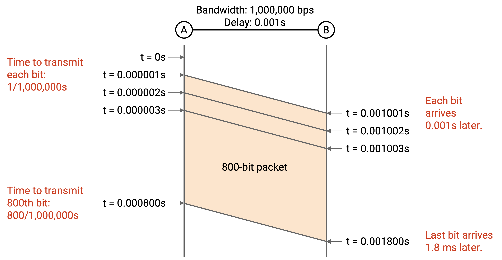
Packet Delay
More generally, the packet delay is the time it takes for an entire packet to be sent, starting from the time the first bit is put on the wire, to the time the last bit is received at the other end. This delay is the sum of the transmission delay and the propagation delay.
The transmission delay tells us how long it takes to put the bits on the wire. In the example, this was \(800 \cdot (1/1{,}000{,}000)\). In general, this is the packet size divided by the link bandwidth.
Since the transmission delay is a function of bandwidth, we can calculate packet delay in terms of the two link properties of bandwidth and propagation delay.
Bandwidth and Propagation Delay Tradeoffs
Consider two links:
Link 1 has bandwidth 10 Mbps and propagation delay 10 ms.
Link 2 has bandwidth 1 Mbps and propagation delay 1 ms.
Which link is better? It depends on the packets you’re sending.
Suppose we wanted to send a single 10-byte packet. For both links, the time it takes to put one packet on the wire is negligible, and the propagation delay is the dominant source of delay. Link 2 has the shorter propagation delay, so it’s the better choice.
Suppose we instead wanted to send a single 10,000-byte packet. Now, the transmission delay is the dominant source of delay, and we prefer Link 1, which allows us to put the bytes on the wire faster (higher bandwidth). You could validate this intuition with formal packet delay calculations: Link 1 takes roughly 18 ms to send this packet, while Link 2 takes roughly 81 ms.
For a real-world example, consider a video call. If the video quality is poor, you probably have insufficient bandwidth (and shortening propagation delay won’t help). By contrast, if there’s a delay between the time you speak and the time the other person answers, the propagation delay is probably too long (and more bandwidth won’t help).
Pipe Diagram
So far, we’ve been drawing timing diagrams to denote when network events happen (e.g. when the recipient gets the packet).
Another way to view packets being sent across the network is to draw the bits on the link at a frozen moment in time. Both views convey the same information, but depending on the context, one view might be more useful than the other.
To draw the link, we can imagine the link is a pipe (similar to the water analogy) and draw the pipe as a rectangle, where the width is the propagation delay, and the height is the bandwidth. The area of the pipe is the capacity of the link.
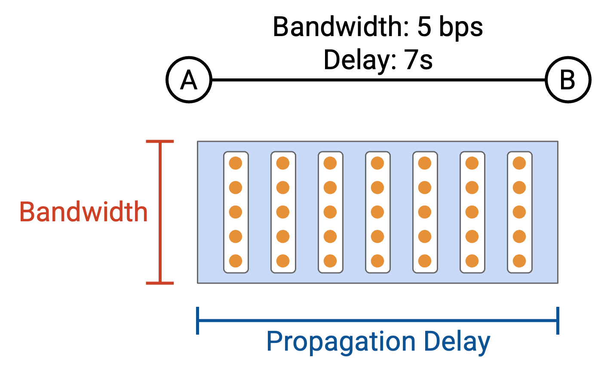
Suppose we want to send a 50-byte packet across the link. In the pipe view, we can show a frozen moment in time with the packet being sent along the link.
The packet is arranged in a rectangle, where the height of the rectangle tells us how many bytes were placed on the wire in a single time step. At every time step, the packet slides right in the pipe. Eventually, the packet starts to exit the pipe, and at each time step, one column of the rectangle exits the pipe.
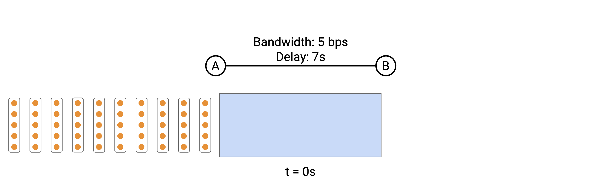
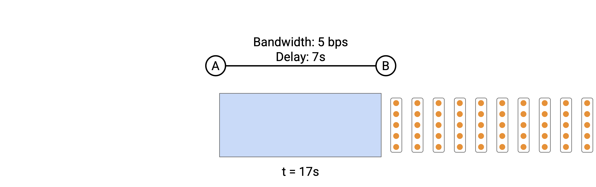
Non-obvious fact: The packet transmission delay in the timing diagram corresponds to the width of the rectangle.
To see why, suppose we have a link that can send 5 bits per second, and we have a 20-bit packet. In the timing diagram, there are 11 seconds between the time of the first and last bit being sent.
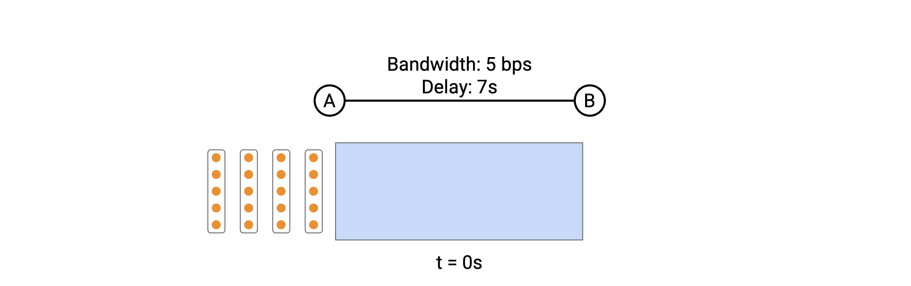
In the pipe diagram, every second, a column of 5 bits marches into the pipe. We need 4 columns to enter the pipe, which takes 4 seconds. This means the width of the packet in the pipe is 4 columns of packets = 4 seconds.
The pipe diagram lets us view the packet transmission time on the same axis as the propagation delay, and compare the two terms.
Pipe diagrams can be useful for comparing different links. Let’s look at the exact same packets traveling through three different links.
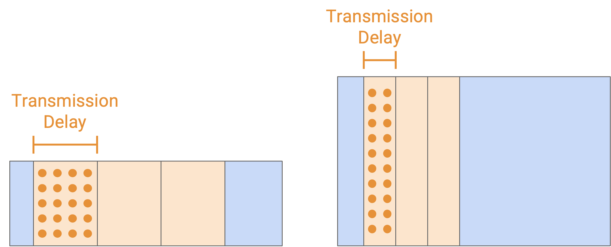
If we shorten the propagation delay, the pipe width gets shorter. The pipe height stays the same, and the shape of each rectangular packet is the same. (Remember, you can think of the packet height as the number of bits marching into the pipe at each time step, and the packet width as the time it takes to march all bits into the pipe.)
Other observations here: The packet width staying the same means the transmission delay didn’t change. Also, the area of the link decreased, which tells us that the link has less capacity.
When we increase the bandwidth, the pipe height gets taller, indicating that we can march more bits into the pipe per unit time.
Notice that the shape of the packets also changed. The packets are now taller, because we can march more bits into the pipe per unit time. As a result, we finish feeding the packet into the pipe much faster, so the width of the packets (transmission delay) decreases.
Overloaded Links
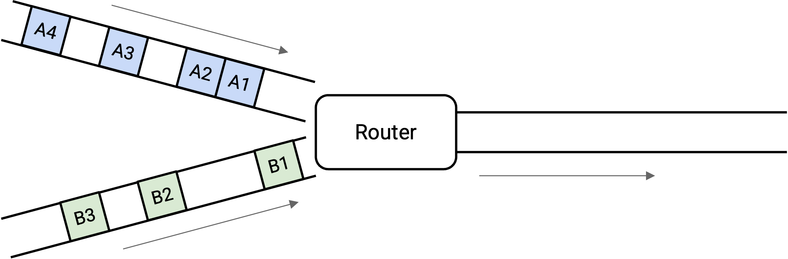
Consider this picture of packets arriving at a switch. The switch needs to forward all the packets along the outgoing link. In this case, there’s no problem, because the switch has enough capacity to process every packet as it arrives.
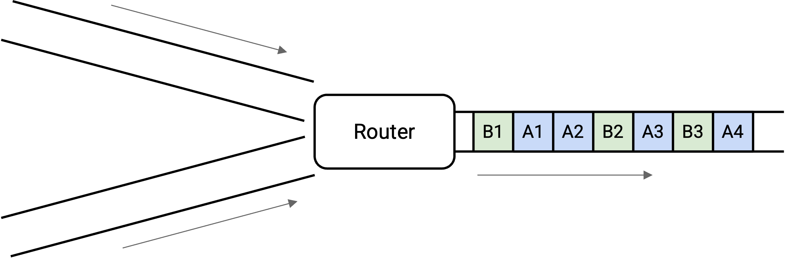
What about in this picture?
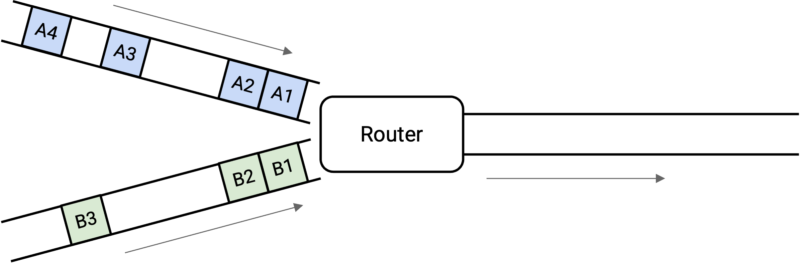
In the long term, we have enough capacity to send all the outgoing packets, but at this very instant in time, we have two packets arriving simultaneously, and we can only send out one. This is called transient overload, and it’s extremely common at switches in the Internet.
To cope with transient overload, the switch maintains a queue of packets. If two packets arrive simultaneously, the switch queues one of them and sends out the other one.
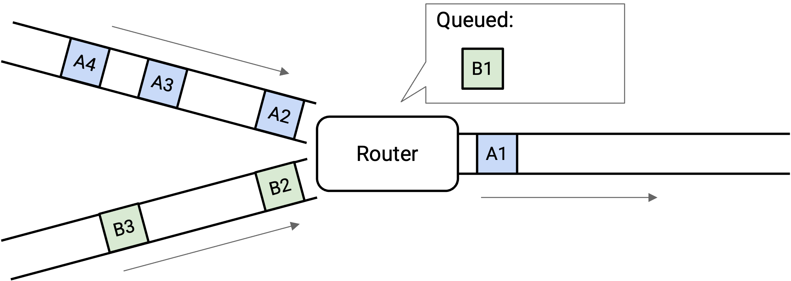
At any given time, the switch could choose to send a packet from one of the incoming links, or send a packet from the queue. This choice is determined by a packet scheduling algorithm, and there are lots of different designs that we’ll look at.
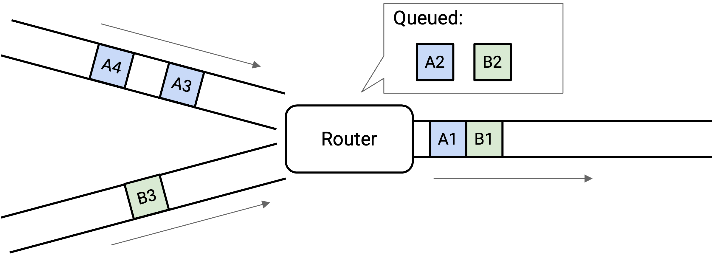
When there are no incoming packets, the switch can drain the queue and send out any queued packets.
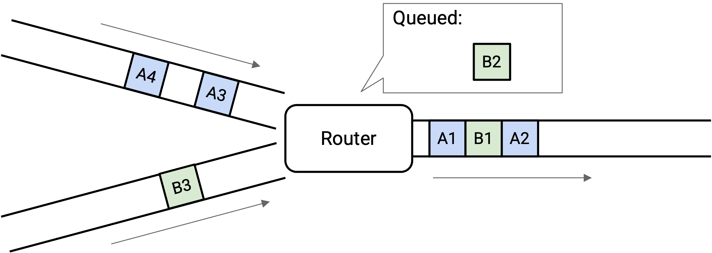
This allows queues to help us absorb transient bursts.
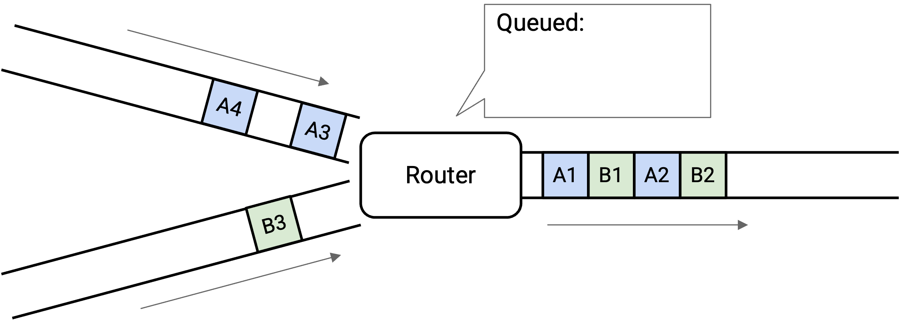
What if the incoming links looked like this?
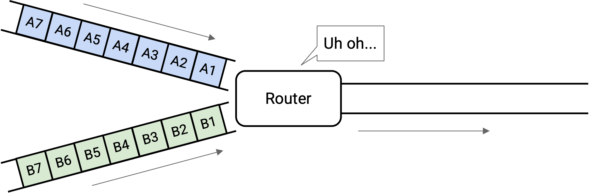
Now we have persistent overload. There just isn’t enough capacity on the outgoing link to support the level of incoming traffic.
We could fill the queue up, but that still isn’t enough to support the incoming load. One way or another, the switch will drop packets.
How do we account for persistent overload? Operators need to properly provision their links and switches. If they notice that a switch is frequently overloaded, they might decide to upgrade the link (which may require manual work).
One possible solution to overload is to have the router tell the senders to slow down. (We’ll study this later when we look at congestion control.) Ultimately, there’s not much we can do to solve overload, though, which is why the Internet is designed to only offer best-effort service.
Now that we have a notion of queuing, we need to go back and update our packet delay formula. Now, packet delay is the sum of transmission delay, propagation delay, and queuing delay.